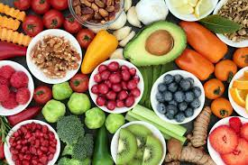
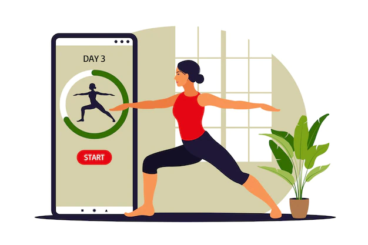

PLAN NUTRITION SANTÉ
Afin de maximiser vos résultats à la salle de sport, vous devez vous concentrer sur votre alimentation, car manger les mauvais aliments peut nuire à vos résultats de musculation. Adopter le bon régime alimentaire fera la différence dans la réalisation de vos objectifs.

DES ENTRAINEMENTS PERSONNALISÉS
Nous créons des entraînements personnalisés pour nos clients de coaching en ligne. Nous apprenons à connaître vos difficultés, vos objectifs et votre style de vie, et élaborons un programme qui correspond à votre emploi du temps.

COACHING PRIVÉ
C’est un fait connu que les gens travaillent plus dur en présence des autres. Avoir un entraîneur à vos côtés peut vous fournir l'encouragement, l'énergie et la motivation dont vous avez besoin pour démarrer votre parcours de remise en forme.